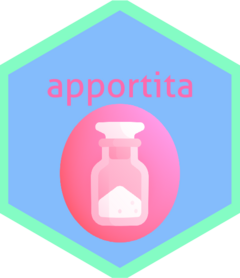

apportita 
Utility for Handling ‘magnitude’ Word Embeddings
Apportita is a partial R port from plasticityai/magnitude, which is a fast, simple utility library for handling vector embeddings.
Apportita would cover only partial features of the original Magnitude library. The main goal of this package is to enable access to user’s local magnitude data store. In other words, apportita would not support streaming access to remote sqlite files.
The package mainly targets the range where the magnitude-light library does, thus some functionalities would not be implemented.
Usage
Construct a Magnitude connection
library(apportita)
## apportita includes a sample magnitude file
## trained with `movie_review` dataset from 'text2vec' package.
conn <- apportita::magnitude(system.file("magnitude/w2v_en_sample.magnitude", package = "apportita"))
dim(conn) ## check the dimension of Magnitude table
#> [1] 12711 20Remember to close the connection after querying to the Magnitude table.
close(conn)Querying
apportita::query(conn, c("i", "watch", "a", "movie"))
#> # A tibble: 4 × 21
#> key dim_0 dim_1 dim_2 dim_3 dim_4 dim_5 dim_6 dim_7 dim_8 dim_9
#> <chr> <dbl> <dbl> <dbl> <dbl> <dbl> <dbl> <dbl> <dbl> <dbl> <dbl>
#> 1 a 0.450 -0.183 0.197 -0.0840 -0.117 -0.134 -0.0380 0.200 0.232 -0.248
#> 2 i 0.453 -0.102 0.152 0.0377 -0.0414 -0.121 -0.181 0.115 0.0691 -0.316
#> 3 movie 0.277 0.0376 -0.144 -0.391 -0.135 -0.111 0.100 0.242 0.295 -0.147
#> 4 watch 0.327 0.172 -0.266 -0.0383 -0.190 -0.233 -0.343 0.206 0.127 -0.173
#> # … with 10 more variables: dim_10 <dbl>, dim_11 <dbl>, dim_12 <dbl>,
#> # dim_13 <dbl>, dim_14 <dbl>, dim_15 <dbl>, dim_16 <dbl>, dim_17 <dbl>,
#> # dim_18 <dbl>, dim_19 <dbl>
apportita::doesnt_match(conn, "book", c("i", "love", "movie"), n = 3)
#> # A tibble: 3 × 2
#> keys distance
#> <chr> <dbl>
#> 1 i 0.948
#> 2 love 0.746
#> 3 movie 0.609
apportita::most_similar(conn, "book", c("i", "love", "movie"), n = 3)
#> # A tibble: 3 × 2
#> keys similarity
#> <chr> <dbl>
#> 1 movie 0.815
#> 2 love 0.722
#> 3 i 0.551Calculate distance/similarity from words to words
Apportita supports methods provided in the proxyC package for calculating distances and similarities.
apportita::calc_dist(conn, "book", c("i", "love", "movie"))
#> 1 x 3 sparse Matrix of class "dgTMatrix"
#> i love movie
#> book 0.9480003 0.7461417 0.6085849
apportita::calc_simil(conn, "book", c("i", "love", "movie"))
#> 1 x 3 sparse Matrix of class "dgTMatrix"
#> i love movie
#> book 0.5506478 0.7216363 0.8148123Experimentally, apportita::calc_wrd also supports computing the Word Rotator’s Distance, which is a textual similarity measure based on optimal transport, presented in https://arxiv.org/abs/2004.15003.
Slicing samples
apportita::slice_n(conn, n = 2, offset = 5)
#> # A tibble: 2 × 21
#> key dim_0 dim_1 dim_2 dim_3 dim_4 dim_5 dim_6 dim_7 dim_8 dim_9
#> <chr> <dbl> <dbl> <dbl> <dbl> <dbl> <dbl> <dbl> <dbl> <dbl> <dbl>
#> 1 marsh -0.0276 0.257 0.223 -0.172 0.0647 -0.158 0.0134 0.156 0.203 -0.311
#> 2 jonny -0.0681 -0.156 0.0627 0.0813 0.379 -0.209 0.116 -0.0220 0.251 -0.224
#> # … with 10 more variables: dim_10 <dbl>, dim_11 <dbl>, dim_12 <dbl>,
#> # dim_13 <dbl>, dim_14 <dbl>, dim_15 <dbl>, dim_16 <dbl>, dim_17 <dbl>,
#> # dim_18 <dbl>, dim_19 <dbl>
apportita::slice_index(conn, index = c(20, 100, 600))
#> # A tibble: 3 × 21
#> key dim_0 dim_1 dim_2 dim_3 dim_4 dim_5 dim_6 dim_7 dim_8 dim_9
#> <chr> <dbl> <dbl> <dbl> <dbl> <dbl> <dbl> <dbl> <dbl> <dbl> <dbl>
#> 1 yawni… -0.185 0.354 0.120 0.0251 -0.269 0.278 0.130 0.345 0.277 0.0802
#> 2 dane -0.245 -0.329 0.353 0.382 -0.288 0.0833 0.0476 -0.254 0.186 0.385
#> 3 drenc… 0.186 -0.121 -0.00184 -0.343 -0.268 0.235 0.0297 0.333 0.286 0.259
#> # … with 10 more variables: dim_10 <dbl>, dim_11 <dbl>, dim_12 <dbl>,
#> # dim_13 <dbl>, dim_14 <dbl>, dim_15 <dbl>, dim_16 <dbl>, dim_17 <dbl>,
#> # dim_18 <dbl>, dim_19 <dbl>
apportita::slice_frac(conn, frac = .01)
#> # A tibble: 127 × 21
#> key dim_0 dim_1 dim_2 dim_3 dim_4 dim_5 dim_6 dim_7
#> <chr> <dbl> <dbl> <dbl> <dbl> <dbl> <dbl> <dbl> <dbl>
#> 1 flipping 0.344 -0.310 -0.0268 -0.195 0.0926 0.142 0.266 0.216
#> 2 dern -0.104 -0.281 0.324 -0.168 0.0829 -0.257 -0.217 0.316
#> 3 mexican 0.450 0.0287 -0.186 -0.296 -0.102 -0.222 -0.0810 0.304
#> 4 supports -0.0775 0.192 0.0801 0.0655 0.202 -0.217 -0.106 -0.373
#> 5 slave 0.477 -0.0774 -0.153 -0.268 -0.102 -0.191 -0.0314 0.308
#> 6 burns 0.126 0.104 -0.0768 -0.281 0.118 -0.00677 0.00832 0.121
#> 7 competitive 0.154 0.0976 -0.113 0.133 0.195 0.227 0.306 -0.0258
#> 8 renaissance -0.237 -0.382 -0.343 -0.0237 -0.252 -0.318 -0.308 -0.113
#> 9 singin 0.0710 -0.403 0.121 -0.276 -0.443 -0.205 -0.0251 0.105
#> 10 kurosawa 0.305 0.0496 -0.137 -0.300 0.0214 -0.107 -0.0189 0.244
#> # … with 117 more rows, and 12 more variables: dim_8 <dbl>, dim_9 <dbl>,
#> # dim_10 <dbl>, dim_11 <dbl>, dim_12 <dbl>, dim_13 <dbl>, dim_14 <dbl>,
#> # dim_15 <dbl>, dim_16 <dbl>, dim_17 <dbl>, dim_18 <dbl>, dim_19 <dbl>